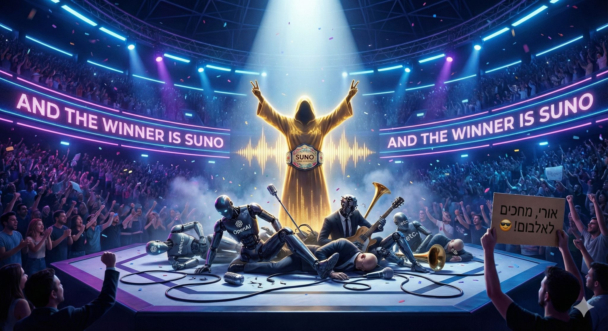

בזמן שהקרב על הובלת ה-AI רק הולך וגובר וכל יום שומעים על עוד מודל של עוד ענקית, בנישה אחת ספציפית יש כלי אחד שמתייצב כמעט בלי רעש
פורסם במקור ב LinkedIn
בזמן שהקרב על הובלת ה-AI רק הולך וגובר וכל יום שומעים על עוד מודל של עוד ענקית, בנישה אחת ספציפית יש כלי אחד שמתייצב כמעט בלי רעש כשליט הברור של הנישה הזאת. מדובר בנישת יצירת מוזיקה בעזרת מודלים חכמים.
השבוע וורנר מיוזיק חתמה על שותפות אסטרטגית עם Suno והפכה בזאת לסימן רשמי שהתעשייה כבר לא מתגוננת אלא מצטרפת למהלך שמתרחש מתחת לרדאר הרבה זמן.. המעבר מהתנגדות לרישוי אומר שהשוק מבין שאי אפשר לעצור נפחי יצירה שגדלים בקצב מסחרר והוא מעדיף לאמץ את הכלים במקום להלחם בהם.
לספוטיפיי לקח הרבה יותר זמן לשכנע את התעשיה לעשות את המהלך הזה. כנראה שחברות המוזיקה התבגרו והתפכחו ומבינים שהם צריכים להשלים עם קצב הטכנולוגיה ולא להתנגד לה.
הוויכוחים על נושא ה-AI שמתאמן על חומרים מוגנים לא ייעלמו אבל הכיוון כבר ברור - יצירת מוזיקה בעזרת מודלים הופכת מתופעת שוליים לתשתית שמעצבת את התעשייה מחדש
והמנצח ברור אפילו יותר: Suno נהיה ה-Market lead הבלתי מעורער בתחום.
(יכולים לשאול גם את Ori Bejerano שכבר מייצר לנו אלבום שלם של קאברים לשירים ישראלים מוכרים משנות ה-90 בסגנון דארק 😎)
